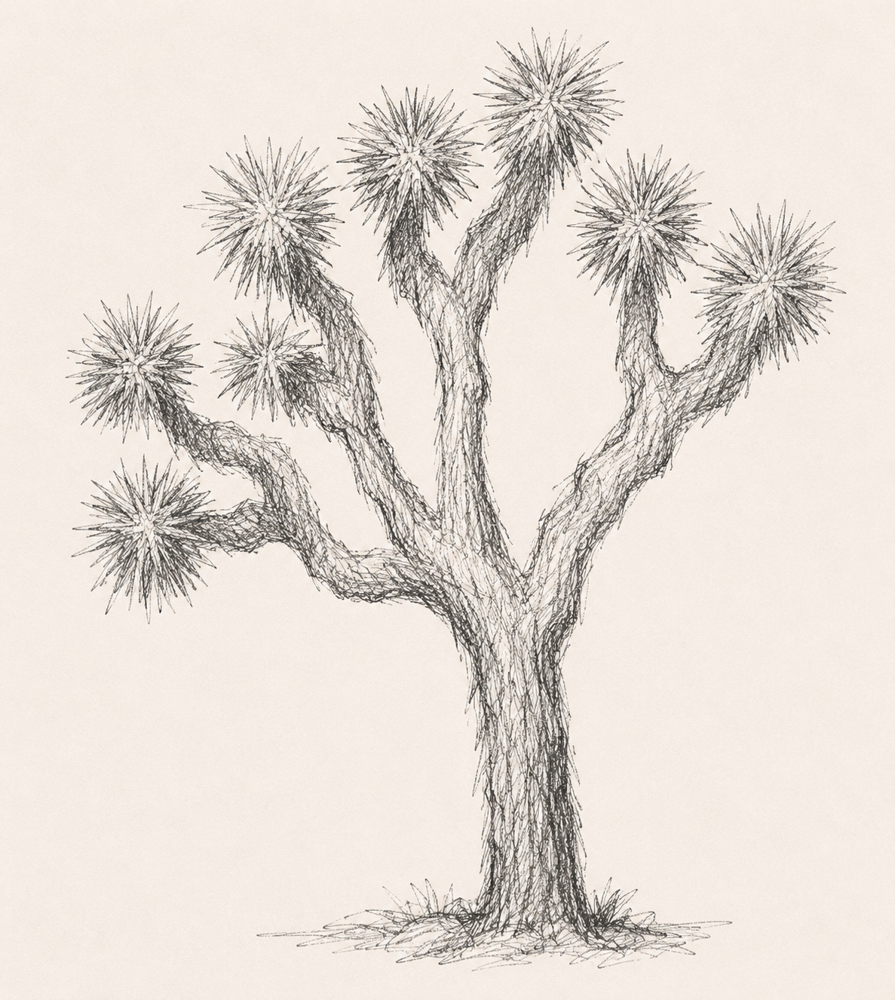
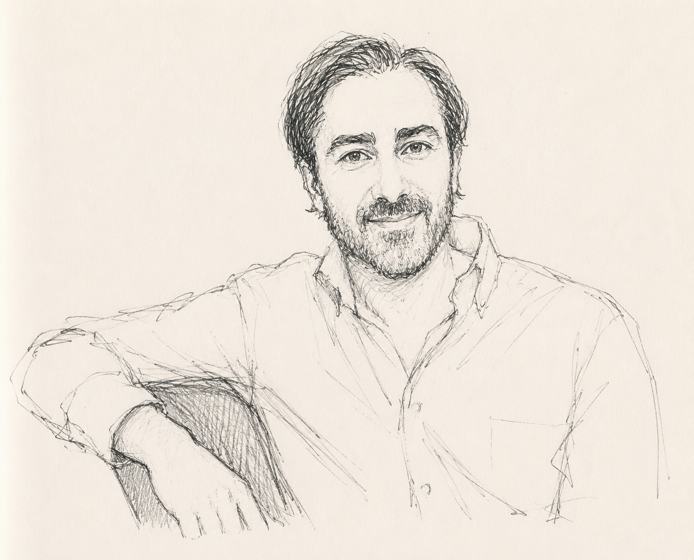
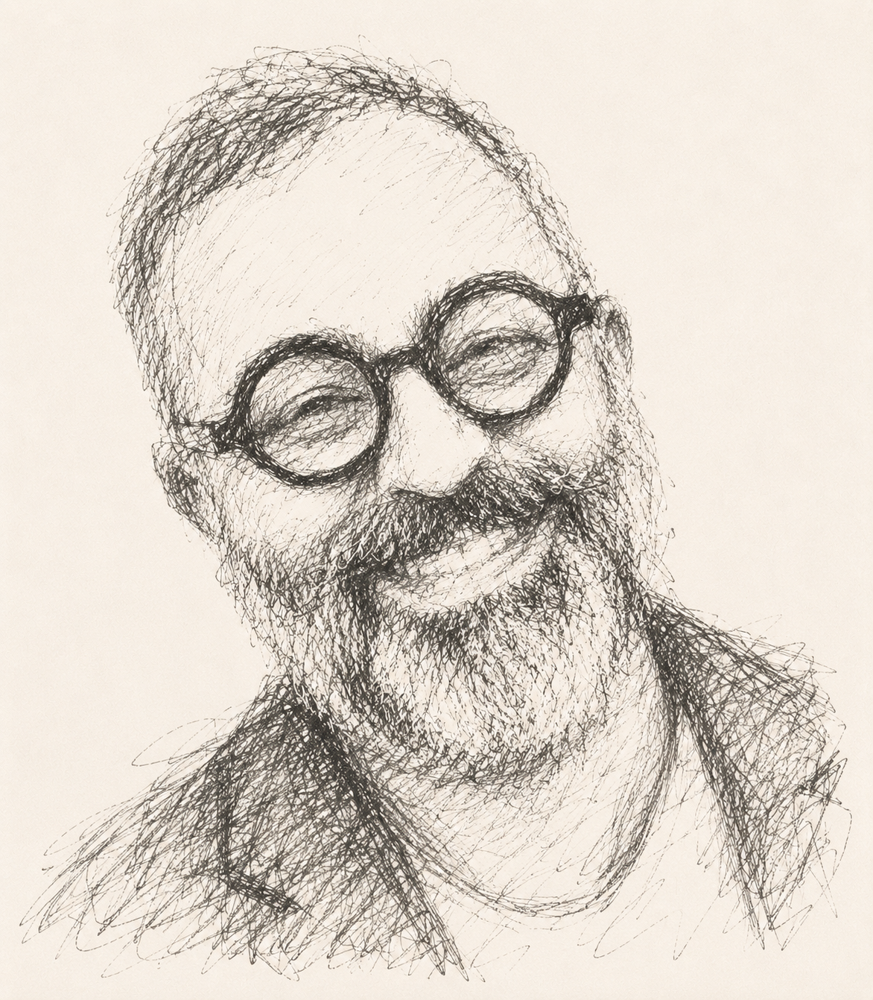

01 / Development
Human development & learning
Tools that shape how people grow over time ... a child's emotional foundation, an adult's decision quality, a singer's muscle memory.
Three brothers, one studio. We test ideas in public, fast, and only build what people pull on. Bootstrapped by choice ... every venture earns its own demand.
Landing pages, prototypes, demos. We put a value proposition into the world before we build the thing.
Waitlist signups, paid pilots, recurring use. If a venture isn't pulled on, we kill it and move.
Every cycle gets faster. AI builds the page, the demo, the explainer. We refine the pull, not the polish.
Bootstrapped by choice. Venture timelines distort signal. We follow the customer, not the clock.
Tools that shape how people grow over time ... a child's emotional foundation, an adult's decision quality, a singer's muscle memory.
Tools that decode how people affect each other ... where miscommunication compounds, where repair is possible. The relationship as the unit, not the individual.
Tools that convert internal experience into observable signal. The user can't see themselves clearly. These products are the mirror.
Bedtime stories that quietly build confidence and calm in young children.
Brings big life questions into conversation with the world's greatest minds.
Helps amateur singers train pitch through real-time visual feedback.
A personal operating system for seeing the patterns that shape your life.
Relationship intelligence that helps couples spot patterns before they become fractures.
Catches the tones and phrasings that quietly shape your relationships.
Turns recipe reels into clean, usable recipes and personal cookbooks.
Emotion tracking paired with voice-based interventions that meet you where you are.

The inspiration began in the deserts of Joshua Tree, in a moment of unusual clarity. Three brothers found ourselves at the same inflection. Aligned in the problems we cared about, the skills we'd built, and where we were in life.
What became evident wasn't just a shared curiosity. It was a shared responsibility ... an opportunity to build something we could stand behind for our children, and the next generation. The name is precise. Three wheels, three brothers, one vehicle moving forward together.
We are drawn to problems people cannot quite name but feel every day. The gap between intention and behaviour. The pattern beneath the conflict. Clarity is a form of care.
We build across emotional development, relationships, self-knowledge, learning. We did not choose a vertical. We chose a conviction.
Three brothers stood in the same desert and realised this had to mean something beyond ourselves. Every decision runs through one filter: does this leave something better?
Science demands evidence. Innovation refuses permission. Strategy knows when to listen to each. Both are always present.
Scientist, Strategist, Innovator rarely agree immediately. The friction is the method. When all three converge, we move with full conviction.

The rule-breaker and pattern-spotter. Soushiant sees around corners and moves before the map is drawn. A decade of building startups taught him that the best products come from following genuine demand, not assumptions. He asks the disagreeable question, challenges the comfortable answer, and won't ship anything he wouldn't use himself.
Neuroscience and psychology trained, Shahin brings scientific rigour to every product hypothesis. He takes the longest to claim something ... but when he does, the claim holds. His background in research and technical product development means every intervention is grounded in evidence, not intuition alone.

The one who holds the longest horizon in the room. Shahram brings executive presence and strategic clarity to everything the studio builds. A systems thinker by nature, he builds coalitions, plays for compounding, and ensures every venture is positioned to earn its place in the market.